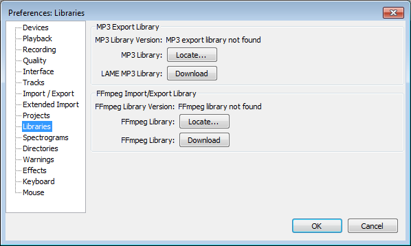

FAQ:Installation, Startup and Plugins
From Audacity Manual
> Forward To: FAQ:Recording - Troubleshooting
|< Index of Frequently Asked Questions
What should I do if I have problems downloading or installing Audacity?
If you can't download Audacity, or if the downloaded setup file is corrupt, try downloading it from our alternate servers. On the page you come to, click the link that says "Looking for the latest version?". If you want the zip version of Audacity for Mac or Windows, click on the link for the "audacity" folder then on the page you come to, click the link for the folder at the top of the list.
If you receive a corrupted file once, it's a very good idea to clear the download list or cache in your browser or download manager before downloading again.
What should I do if I get errors building Audacity?
Audacity provides ready-built installer programs for Windows and Mac, but Audacity can also be built from source code on any platform. With a little knowledge, building is a great way to customize Audacity! For help, please see the Wiki documentation for Windows, Mac and Linux.
If you still cannot build Audacity, please ask on the Compiling Audacity board on the Forum.
- Please tell us whether you are building from a release tarball or Audacity HEAD.
- On Windows, please give all the instances of "ERROR" in the Visual Studio output window (including Linker errors).
- For Mac and Linux, please provide the last lines of the configure or make output that fail.
- For Linux, also tell us which distribution and release you are using (for example, Ubuntu 11.10 or Fedora 16).
Windows: How do I install Audacity, and do I have to uninstall a previous version first?
Save: On the download page, left-click the "installer" link to save it to your computer. Check the browser preferences if necessary to find out where your downloads are saved. Alternatively, right-click over the link, "Save Target As" or "Save Link As" and choose the location to save the file to. Then double-click the downloaded .exe file to start the installer. You must be an administrator on the computer to do this, or follow the prompts to confirm your permission to install.
Run: Using Internet Explorer and a few other browsers, you can left-click the "installer" link and select an option to "Run" the file. This launches the Audacity setup immediately. Note: Some security programs will query or block installers running from the computer's temporary space.
Updating a previous installation: If you install a new Audacity version after installing a previous one, the installer will offer to install to the same directory as the previous installation. If the previous installation was Audacity 1.2 or 2.x, the installation directory is normally Program Files\Audacity (or Program Files(x86)\Audacity on 64-bit Windows). As long as you don't change the installation directory, Audacity will install over the previous 1.2 or 2.x version, and any extra plugins you added to the "Plug-Ins" folder will still be available.If the previous version was 1.3.x, please uninstall 1.3 before installing the current 2.x version. After uninstalling 1.3, any extra plugins you added to that version will remain, and you can move them to the "Plug-Ins" folder of the new installation.
Updating optional libraries:
- If upgrading from Audacity 2.0.5 or earlier, you must upgrade to the latest FFmpeg library if you require import and export of M4A (AAC), AC3, AMR (narrow band) and WMA.
- If upgrading from Audacity 1.3.6 or earlier, you must update to the latest LAME library if you require MP3 export.
Otherwise there is no need to upgrade LAME or FFmpeg unless this is indicated in the Release Notes for the new version of Audacity.
Windows: How can I fix "Entry Point Not Found" when first launching Audacity on Windows XP?
This error occurs if you are running less than the latest "Service Pack" of updates for your Windows XP system.
- To run on Windows XP 32-bit, Audacity requires the latest Service Pack 3.
- To run on Windows XP 64-bit, Audacity requires the latest Service Pack 2.
To check if you have 32-bit or 64-bit XP, click Start, then Run, then type "winmsd.exe" (without quotes) and click OK. In "System Summary", the "Processor" item will start with x86 for a 32-bit system or IA-64 or AMD64 for a 64-bit system.
| Please note that Windows XP is no longer supported by Microsoft so even with the latest Service Pack it will be unpatched against any new security vulnerabilities that appear. Consider if you can update to the much more secure Windows 7 or Windows 8. If this is not practicable, you could try installing a Linux operating system instead. Most versions of Linux are free and all are very secure.
If you remain with Windows XP, ensure you have a good third-party anti-virus application, though be aware that this will not give you complete protection if previously unknown security threats emerge. For extra protection, install the Enhanced Mitigation Experience Toolkit (EMET) from Microsoft on your XP system. This application is quite easy to use. |
Windows: How do I uninstall Audacity?
Audacity can be uninstalled by choosing "Add/Remove Programs" or "Uninstall a program" in the Windows Control Panel. Select "Audacity" from the list and follow the instructions which will launch the Audacity uninstall program. Make sure you quit Audacity before uninstalling, or you will receive errors that some files could not be removed.
If the Control Panel cannot uninstall Audacity, open the folder in which you installed Audacity and double-click "unins000.exe" (this file might have other numbers in the name). This requires "unins000.dat" (or similar) to be present in the installation folder.
If you still cannot uninstall Audacity, download the installer again. Install Audacity to the same location you installed it to before (which happens by default). This will replace the uninstall files with good copies, then you can run the uninstaller again.
Uninstallation leaves your Audacity settings intact, in case you want to install Audacity again at some time in the future. If you want to remove your settings as well, delete Audacity's folder for application data whose location is given here.
See also: How do I reset my Audacity settings?
Mac OS X: Why do I see "unidentified developer", "Mac App Store" or "damaged" messages when I launch Audacity?
On OS X 10.7.5 and later, the Apple Gatekeeper feature controls launching of applications downloaded from the internet. If Gatekeeper won't launch Audacity because it is "from an unidentified developer" or "not downloaded from the Mac App Store", right-click or control-click on the Audacity application in Finder, choose "Open", then in the dialog box that appears, choose "Open". You should then be able to launch Audacity normally on subsequent occasions.
Occasionally, you may see an error message that "Audacity is damaged and can't be opened. You should move it to the Trash." If this message persists when you right-click or control-click over Audacity, open . Under the header "Allow applications downloaded from:", choose "Anywhere". Audacity should now launch. It would now be advisable to change the "Anywhere" preference back to a more restrictive setting.
How can I solve Audacity not appearing or crashing every time I launch it?
LADSPA, VST or Audio Unit plugins
If the hang or crash occurs after pressing on the Register Effects dialog, a LADSPA, VST or Audio Unit (Mac OS X) effect could be the reason.
You can restart Audacity then use the Register Effects dialog to do one of the following.
- Click to load none of the effects but be presented with the installation dialog again at next Audacity launch.
- Uncheck all (or individual) effects to prevent them loading, then click . The effects you uncheck will not load again until you enable "Rescan plugins next time.." in Effects Preferences and restart Audacity.
To assist in identifying an errant plugin, you can inspect the pluginregistry.cfg file in the Audacity folder for application data. Look in the "Effect Family" lines in this file to see which LADSPA, VST or AU plugins Audacity had managed to load before it crashed.
On Mac OS X, you can identify a plugin which crashed from the Mac crash report. To view saved reports, open Finder, choose Go > Go to Folder then on OS X 10.4 and 10.5, type ~/Library/Logs/CrashReporter/, on OS X 10.6 to 10.9 inclusive type ~/Library/Logs/DiagnosticReports/ or on OS X 10.10 type /Library/Logs/DiagnosticReports/.
Alternatively if you have plugins in system folders for LADSPA, VST or Audio Units which you can't or don't want to use in Audacity, you could rename those folders when you want Audacity to scan for plugins. After the Audacity scan, rename the folders back to their original name so that they will be available for other applications.
If you discover a specific plugin that misbehaves in Audacity, please email our feedback address.
Incompatible audio device or audio drivers
If the Audacity hang or crash occurred after you added or enabled a new audio device, try removing or disabling that device (or updating its drivers) then restart Audacity. If the problem occurred after a driver update, try rolling back to the previous set of drivers. On Windows, you can revert driver changes caused by Windows Update.
If the entire computer crashes, reboots or displays a blue screen message when you launch Audacity, this is almost always due to a bad or mismatched audio driver (or due to a system driver conflicting with your sound device). You can inspect the memory dump of the computer to identify the source of the problem.
Resetting Preferences
The Audacity window could also fail to appear due to some Audacity configuration problem. To solve this, try resetting the Audacity Preferences. Conflicts with other applications such as security or anti-virus applications can occasionally cause Audacity not to launch. Try turning off some of the more advanced behaviour detection settings in the security application, or add an exception to its settings to make Audacity a trusted application.
How do I reset my Audacity settings?
Uninstalling Audacity does not automatically repair or reset your settings in Audacity Preferences. If you are trying to fix a problem with Audacity, take one of the following actions.
- Quit Audacity and reset Preferences using the audacity.cfg settings file. There is then no need to uninstall and re-install.
- Alternatively, Windows users may run the installer and in the "Select Additional Tasks" screen, put a check in the "Reset Preferences" box. Complete the installation. On launching Audacity, a dialog will appear where you can confirm if you want to reset preferences just this once, or not.
See also: Windows: How do I uninstall Audacity?
How do I download and install the LAME MP3 encoder?
Windows
- Go to the external LAME download page
Left-click this link, do not right-click. - Directly underneath "For FFmpeg/LAME on Windows click below:", left-click the link Lame v3.99.3 for Windows.exe and save the file anywhere on your computer.
- Double-click "Lame v3.99.3 for Windows.exe" to launch it (you can safely ignore any warnings that the "publisher could not be verified").
- Follow the Setup instructions to install LAME for Audacity, making sure not to change the offered installation location of "C:\Program Files\Lame for Audacity" (or "C:\Program Files (x86)\Lame for Audacity" on a 64-bit version of Windows).
You should now be able to export MP3s without any further configuration, choosing then selecting "MP3 Files" in the Export Audio Dialog.
Troubleshooting
Occasionally, there may be a conflict where Audacity still tries to detect the path to an older lame_enc.dll file. To correct this:
- Ensure there are no older versions of lame_enc.dll in any locations where Audacity detects it, namely:
- C:\Program Files\Lame for Audacity or C:\Program Files (x86)\Lame for Audacity (this is where the installer puts the new .dll)
- the Audacity installation folder (usually C:\Program Files\Audacity or C:\Program Files (x86)\Audacity), or in the "Plug-Ins" folder inside that.
- Exit Audacity and navigate to the audacity.cfg preferences file at:
- Windows XP: Documents and Settings\<user name>\Application Data\Audacity\audacity.cfg
- Windows Vista/Windows 7/Windows 8: Users\<user name>\AppData\Roaming\Audacity\audacity.cfg.
- Open audacity.cfg in a text editor such as Notepad, and delete the two lines starting with:
- [MP3]
MP3LibPath=
- [MP3]
- Save the changes to audacity.cfg and restart Audacity.
| In order to see audacity.cfg, you may need to set the operating system to show hidden files and folders. See instructions for Windows 7 and Windows versions before 7. |
Mac OS X
In case of difficulty, please download the zip version "Lame_Library_v3.98.2_for_Audacity_on_OSX.zip" from "Alternative zip download for Lame 3.98.2" below and follow the instructions.
- Installer
- Go to the external LAME download page.
- Download Lame Library v3.98.2 for Audacity on OSX.dmg.
- When you have finished downloading, double-click the .dmg to mount it, then go to the Finder (in Safari, the "Lame Library v3.98.2 for Audacity" virtual disk image will be extracted and mounted automatically after downloading).
- Double-click "Lame Library v3.98.2 for Audacity.pkg"; the standard OS X Installer will start
- Click through the steps in the Installer, accepting the defaults in all cases; this will install the LAME binary "libmp3lame.dylib" in /usr/local/lib/audacity.
- Audacity should detect LAME automatically when you export as MP3. If Audacity cannot find LAME:
- Click then choose "Libraries" on the left.
- Click "Locate..." under "MP3 Export Library", then "Browse..." in the "Locate Lame" dialog.
- The "Where is libmp3lame.dylib?" window will open at /usr/local/lib/audacity; select "libmp3lame.dylib", click "Open" then "OK" and "OK".
- Alternative zip download for Lame 3.98.2
- Download "Lame_Library_v3.98.2_for_Audacity_on_OSX.zip" from the external download page.
- Extract the contents of the zip to a folder called "Lame_Library_v3.98.2_for_Audacity_on_OSX" anywhere you have full permissions (such as your Desktop).
- Click then choose "Libraries" on the left.
- Click "Locate..." under "MP3 Export Library", then "Browse..." in the "Locate Lame" dialog.
- Navigate to and open the folder you extracted the zip to, select "libmp3lame.dylib", click "Open" then "OK" and "OK".
This is a good solution if Audacity does not recognize or work correctly with libmp3lame.dylib when installed to /usr/local/lib/audacity.
You should now be able to export MP3s without any further configuration, choosing then selecting "MP3 Files" in the Export Audio Dialog.
In case of difficulty please view our detailed instructions on the Audacity Wiki.
Linux/Unix
You may download (or compile) then install a compatible version of the LAME MP3 encoder then locate it in Libraries Preferences.
Most Linux distributions have some sort of package manager that fetches software packages from the Internet and installs them for you. Open that package manager, search for LAME, and install it if it is not already installed.
Removal of Libraries Preferences
Some distributions (for example, current Ubuntu) package Audacity with MP3 encoding and FFmpeg (or Libav) already linked dynamically to the relevant system libraries. In these packaged Audacity builds there is no need to locate LAME or FFmpeg, so Audacity will have no "Libraries" Preferences.
Users compiling Audacity from source code can similarly remove the "Libraries" Preferences by configuring Audacity with --disable-dynamic-loading then build Audacity linked to both system LAME and system FFmpeg or (libav). Audacity currently requires FFmpeg 1.2 to 2.3.x (or libav 0.8 to 10.x), so if system FFmpeg or libav is outside those versions you may first need to build an appropriate local version of FFmpeg or libav to link to.
Installing LAME on Ubuntu 11.10 and later
In Ubuntu 11.10 and later the default package manager is the "Ubuntu Software Center". It is often most convenient to install the "Ubuntu Restricted Extras" as this includes LAME, FFmpeg and other useful media encoding/decoding tools.
If you wish to install only the LAME package required for MP3 export, search for LAME in the Ubuntu Software Center and install it.
Installing LAME on other Debian-based systems
The following are detailed instructions for installing LAME using the Synaptic package manager on recent Debian-based systems and in Ubuntu 11.04 and earlier.
- Open Synaptic:
- In GNOME (the default desktop environment for many Debian-based systems), access Synaptic by clicking
- In KDE there will be a similar menu accessible from the bottom-left of the screen
- Enter the root password when asked for it.
- In the Synaptic window, choose "Settings", then “Repositories”
- In the "distribution Software" tab, check the box for "non free" (on Ubuntu based systems this is called "multiverse"), then hit the Close button.
- Back in the main Synaptic Window, type “lame” in the "Quick search" box.
- The search results will show the packages “lame” and “libmp3lame0” at the top of the list; mark both for installation by double-clicking.
- Click "Apply", and on “OK” for any warnings; the LAME software will automatically download and install.
- Right-click over the entry for "libmp3lame0" > Properties
- On the "Installed Files" tab, note the location of "libmp3lame.so.0", probably at /usr/lib/libmp3lame.so.0
- Close all the Synaptic windows
Locating LAME
- Open Audacity, click then on "Libraries" in the list on the left
- In "MP3 Export Library" check if a LAME version number displays to right of "MP3 Library Version". If so, LAME has been detected and you should now be able to export MP3 and skip the remainder of these instructions. If the MP3 Library is stated as "not found":
- Click the "Locate...” button
- In the "Locate Lame" dialog that appears, click "Browse"
- In the "Where is libmp3lame.so.0?" dialog, navigate to the location you noted in step 9, select "libmp3lame.so.0", click "Open", then "OK" and "OK" to exit Preferences
If your distribution does not have a LAME package, please view these instructions on the Audacity Wiki.
How do I download and install the FFmpeg Import/Export Library?
- Because of software patents, Audacity cannot include the FFmpeg software or distribute it from its own websites. Instead, use the following instructions to download and install the free and recommended FFmpeg third-party library.
|
FFmpeg 2.2.2 for Windows and Mac from the links below should be used with the latest version of Audacity. The previous FFmpeg 0.6.2 for Audacity will not be recognized by Audacity 2.0.6 and later, and FFmpeg 2.2.2 will not be recognized by Audacity versions before 2.0.6.
|
Windows
- Go to the external download page
Left-click this link, do not right-click. - Directly underneath "For FFmpeg/LAME on Windows click below:", left-click the link ffmpeg-win-2.2.2.exe and save the file anywhere on your computer.
- Double-click ffmpeg-win-2.2.2.exe to launch the installer (you can safely ignore any warnings that the "publisher could not be verified").
- Read the License and click Next, Next and Install to install the required files to C:\Program Files\FFmpeg for Audacity (or C:\Program Files (x86)\FFmpeg for Audacity on a 64-bit version of Windows).
If you have the previous FFmpeg 0.6.2 installed to the same location, the FFmpeg 2.2.2 installation will overwrite the 0.6.2 installation with the new files. There is no need to uninstall FFmpeg 0.6.2 first.
- If Audacity was running when you installed FFmpeg, either restart Audacity or follow the steps to manually locate FFmpeg.
- Alternative zip download for FFmpeg 2.2.2
- Go to the external download page
Left-click this link, do not right-click. - Under "For FFmpeg/LAME on Windows click below:", left-click the link ffmpeg-win-2.2.2.zip and save the file anywhere on your computer.
- Extract the contents to a folder called "ffmpeg-win-2.2.2" anywhere on your computer, then follow the instructions below to locate the file "avformat-55.dll" using the Libraries Preferences.
Mac OS X
- Installer:
- Go to the external download page
Left-click this link, do not right-click. - Directly underneath "For FFmpeg/LAME on Mac OSX click below:", left-click the link ffmpeg-mac-2.2.2.dmg and save the file anywhere on your computer.
- When you have finished downloading, double-click the DMG file to mount it (if you download with Safari, the ffmpeg virtual disk image will be extracted and mounted automatically after downloading). If the DMG window is not on top, go to Finder, then under "Devices" on the left, click the "ffmpeg-mac-2.2.2" DMG.
- In the DMG window, double-click the "ffmpeg-mac-2.2.2.pkg" to launch the standard OS X package installer.
- Click through the steps in the installer, accepting the defaults in all cases. This will install the FFmpeg libraries in /Library/Application Support/audacity/libs.
- Restart Audacity if it was running when you installed FFmpeg then Audacity should detect FFmpeg automatically.
- If you have problems with Audacity detecting FFmpeg, follow the steps to manually locate FFmpeg.
- Zip file:
- Go to the external download page
Left-click this link, do not right-click. - Directly underneath "For FFmpeg/LAME on Mac OSX click below:", left-click the link ffmpeg-mac-2.2.2.zip and save the file anywhere on your computer.
- Some Mac computers may extract the files from the zip automatically to a new folder in the download directory. Otherwise, extract the contents to a folder called "ffmpeg-mac-2.2.2" anywhere you have full permissions (such as your Desktop). Then follow the instructions below to locate libavformat.55.dylib using the Libraries Preferences.
On OS X 10.6 or later, it is not recommended to extract the files to /usr/local/lib because on some machines, administrative or root permissions may be needed to read the FFmpeg library from there.
- Compiling Audacity against another build of FFmpeg:
- You can also build and install your own copy of FFmpeg 1.2 or later using source code from the FFmpeg project. Then build Audacity from SVN, linking to your self-installed copy of FFmpeg according to these principles.
GNU/Linux
You may download (or compile) and install a compatible version of the FFmpeg or libav library for your purposes then locate it in Libraries Preferences.
If you download a pre-built library, this might be either a "shared" or "static" build. A static build consists of a single libavformat library, whereas a shared build has at least three libraries (libavformat, libavcodec and libavutil). It is recommended to use a shared build, but Audacity will also work with a static build.
To build FFmpeg, obtain the source code from the FFmpeg project. To build libav, obtain the source code from the libav project. Configure the build with --enable -shared so that it builds the necessary shared object library (.so) files. If required, you can also configure to enable or disable particular encoding/decoding libraries. When you build Audacity from our source code, it will link to the installed FFmpeg headers.
FFmpeg version support
| Audacity 2.0.6 supports FFmpeg 1.2 to 2.3.x (or libav 0.8 to 0.10.x). |
- Compiling Audacity against supported FFmpeg/libav: Dynamic loading (as in default Audacity ./configure) enables Libraries Preferences for manual loading of LAME and FFmpeg/libav but requires building against the FFmpeg project.
- No-longer-supported FFmpeg/libav: Audacity 2.0.6 and later may still build against unsupported FFmpeg/libav (such as FFmpeg 0.8 which is system-installed on Debian Wheezy), but configuring with --disable-dynamic-loading will usually be necessary. This will cause mono WMA files to export with no audio data.
- See the "Compiling" section in the 2.0.6 or later Release Notes for more guidance.
Removal of Libraries Preferences
Some Linux distributions or versions thereof may package Audacity with MP3 encoding and FFmpeg support already linked dynamically to the relevant system libraries. In these packaged builds there is no need to locate LAME or FFmpeg, so Audacity will have no "Libraries" Preferences.
Users compiling Audacity from source code can similarly remove the "Libraries" Preferences by configuring Audacity with --disable-dynamic-loading then build Audacity linked to system LAME and to a system (or local) version of FFmpeg 1.2 to 2.3.x or libav 0.8 to 0.10.x.
Locating the FFmpeg library manually
If you installed FFmpeg while Audacity was running, or if you installed FFmpeg to a non-default location, Audacity will ask you to configure Preferences to locate the FFmpeg library. To do this, access Preferences then the "Libraries" tab on the left:
- 
As seen in the image above, the "FFmpeg Library Version" will say "not found". To correct this:
- Click the button to right of FFmpeg Library:.
- If a "Success" message indicates Audacity has now automatically detected valid FFmpeg libraries and asks if you want to detect them manually, click , then to close Preferences.
- If the "Locate FFmpeg" dialog appears, click .
- Navigate to the avformat file in the folder that contains FFmpeg, and select it. The file may have different names, such as "avformat-55.dll" on Windows, "libavformat.55.dylib" on Mac or "libavformat.so.55" on Linux.
- Click then and again to close Preferences.
FFmpeg Library Version should now show a set of three version numbers for the sub-libraries of FFmpeg ("F" for libavformat version, "C" for libavcodec version and "U" for libavutil version). If you still see "not found", you may have installed the wrong libraries. Click the button to obtain the correct library for your operating system. You can also choose to see diagnostic information about FFmpeg detection.
How do I install VST plugins?
Audacity supports almost all VST effect plugins on Windows, Mac OS X and Linux including "shell" VST's that host multiple VST effects.
On first use, Audacity automatically scans for VST effects then presents you with a Register Effects dialog to choose which effects to load. The VST effects that you checkmark will be loaded when you click . The list will include any detected VST instrument (VSTi) plugins (such as synths) and any real-time VST effects (that change the audio data while playing or recording), but these are not yet supported and will not load even if you enable them in the dialog.
To install new VST effects, place them in the "Plug-Ins" folder inside the Audacity installation folder. On Windows, this is usually under Program Files (or Program Files (x86) on 64-bit Windows). On Mac OS X, it is usually in the "/Applications" folder. On Linux, you must add a "plug-ins" folder to /usr/bin/ (if you installed a packaged version of Audacity) or to /usr/local/bin (if you installed a self-compiled version of Audacity). VST effects will also be found if they are added to (or already exist in) various system or user locations. Follow the steps below to load the newly added plugins into Audacity.
- Go to .
- Under "Plugin Options", ensure that the checkbox
 Check for updated plugins when Audacity starts has a checkmark, then click (This checkbox should be enabled by default, so this step is usually not required).
Check for updated plugins when Audacity starts has a checkmark, then click (This checkbox should be enabled by default, so this step is usually not required).
- Restart Audacity then in the Register Effects dialog, verify your newly added VST plugins have a checkmark and click . Any newly added LADSPA or Audio Unit effects (Mac OS X) which you checkmark in the dialog will also be loaded.
See also: Why do some VST plugins not work or display incorrectly?
Why do some VST plugins not work or display incorrectly?
Audacity will by default display VST effect plugins with a full graphical interface where the plugin supplies this.
VST instruments (VSTi) (such as synths) and real-time VST effects (that change the audio data while playing or recording) are not yet supported and will not load even if you enable them in the Register Effects dialog. VST 3 plugins are not supported.
If any plugin displays incorrectly, you can use the Manage button in the effect's dialog then choose Options... to open the
VST Effect Options for that effect. Then remove the checkmark from the "Enable graphical interface" checkbox  Enable graphical interface and click . When you reopen the effect it will display a simpler tabular interface.
Enable graphical interface and click . When you reopen the effect it will display a simpler tabular interface.
|
If you experience a problem with a specific VST effect plugin in Audacity, please contact us.
See also: How do I install VST plugins?
What are LADSPA, LV2 or VAMP plugins and how do I install them?
LV2 is a more advanced evolution of the LADSPA plugin architecture which was originally developed on Linux. Audacity supports both LV2 and LADSPA effects on Windows and Mac OS X as well as GNU/Linux. You can download and install a set of over 90 LADSPA plugins for all operating systems. See Adding a LADSPA plugin for how to install LADSPA plugins. You can then choose which LADSPA plugins to install in the Register Effects dialog.
There are not yet many pre-compiled LV2 plugins for Windows and Mac OS X, though it may be possible to compile some Linux LV2 plugins for other operating systems. Audacity scans for and loads all detected LV2 effects each time you launch it. To add a new LV2 effect, place its complete ".lv2" folder (not the files alone) at the top level of any of the LV2 search locations then restart Audacity.
VAMP plugins are usually for analyzing or labeling audio so will appear under Audacity's Analyze Menu. You can do interesting things like attempt to track beats, note pitches, chords or frequencies. VAMP plugins work on Windows, Mac OS X and GNU/Linux. Audacity scans for and loads all detected VAMP plugins each time you launch it. To add a new VAMP analysis tool, add the plugin's DLL, DYLIB or SO file and any supplied category or RDF files to any of the VAMP search locations then restart Audacity.
How do I install plugins on Linux?
Audacity on GNU/Linux supports a large number of Nyquist, LADSPA, LV2 and VAMP effects. Although quite rare as native Linux effects, VST effects are now supported in Audacity on Linux. See VST Effects for how to install VST effects in Audacity. Audacity supports 64-bit effects in VST, LADSPA and VAMP format on 64-bit Linux systems (conversely, 32-bit plugins in those formats will not load into Audacity on 64-bit Linux).
Individual Nyquist and LADSPA plugins can be installed by putting the plugins into the Audacity "Plug-Ins" folder:
- /usr/share/audacity/plug-ins if Audacity was installed from a repository package
- /usr/local/share/audacity/plug-ins if you compiled Audacity from source code.
These locations are usually set as read-only, so the plugins will need to be copied as root (for example, by issuing an appropriate root command in the terminal, or by using the terminal to open a file manager application with root permissions).
Updating the repository package of Audacity may remove plugins that are not part of the package. To solve that problem you can:
The dot in the folder name .audacity-data and .audacity-files indicates that it is a hidden folder, but the "Plug-Ins" subfolder in either folder is accessible without root permissions and will not be modified by installing a new Audacity package. |
Audacity installed from a repository package or compiled from source should automatically find LADSPA plugins installed in /usr/lib/ladspa. This may not be the case if you are compiling older source code. If necessary you can set an environment variable to indicate to Audacity where LADSPA plugins are installed. For Debian-based distributions this can be done by entering the following code at the command prompt (change <user> to your account user name):
| export LADSPA_PATH=$LADSPA_PATH:/home/<user>/.ladspa:/usr/local/lib/ladspa:/usr/lib/ladspa |
If you wish this path to be set each time you boot, the LADSPA_PATH environment variable may be added to ~/.profile or this file may be created if it does not exist. An example of how to add the LADSPA_PATH environment variable:
| LADSPA_PATH=$LADSPA_PATH:/home/<user>/.ladspa:/usr/local/lib/ladspa:/usr/lib/ladspa export LADSPA_PATH |
For OpenSuse 64, LADSPA plugins may be found in /usr/lib64/ladspa. This path can be set by adding the following line to your /etc/environment file:
| LADSPA_PATH=/usr/lib64/ladspa |
LV2 and VAMP plugins cannot be placed in the Audacity "Plug-Ins" folder or your .audacity-files folder. LV2 plugins should be installed by placing the complete .lv2 folder (not the individual files in that folder) in the root of ~/.lv2, /usr/local/lib/lv2, /usr/local/lib64/lv2, /usr/lib/lv2 or /usr/lib64/lv2. Alternatively the environment variable may be set as in this example:
| export LV2_PATH=$HOME/.lv2:/usr/local/lib/lv2:/usr/lib/lv2 |
VAMP plugins may be installed in $HOME/vamp, $HOME/.vamp, /usr/local/lib/vamp or /usr/lib/vamp. Alternatively the VAMP_PATH environment variable may be set to any of those specified VAMP installation directories. VAMP plugins will normally be placed in the Analyze Menu of Audacity.
Remember to restart Audacity after installing effects.
|